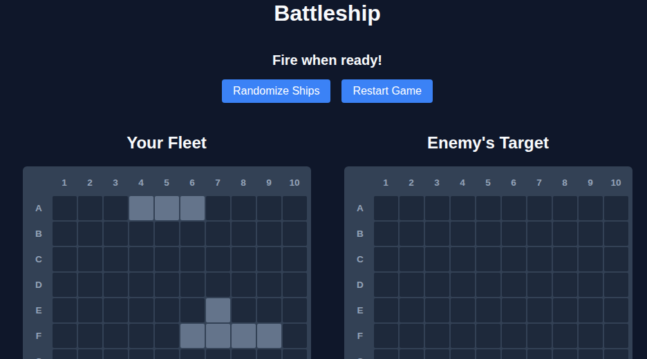
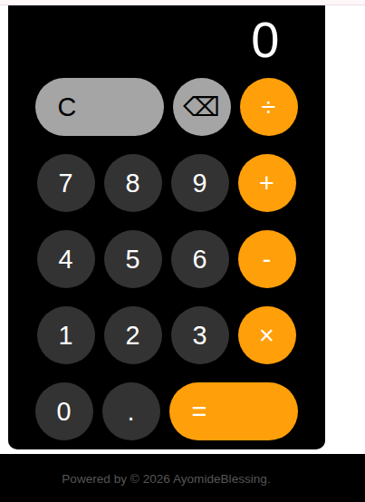
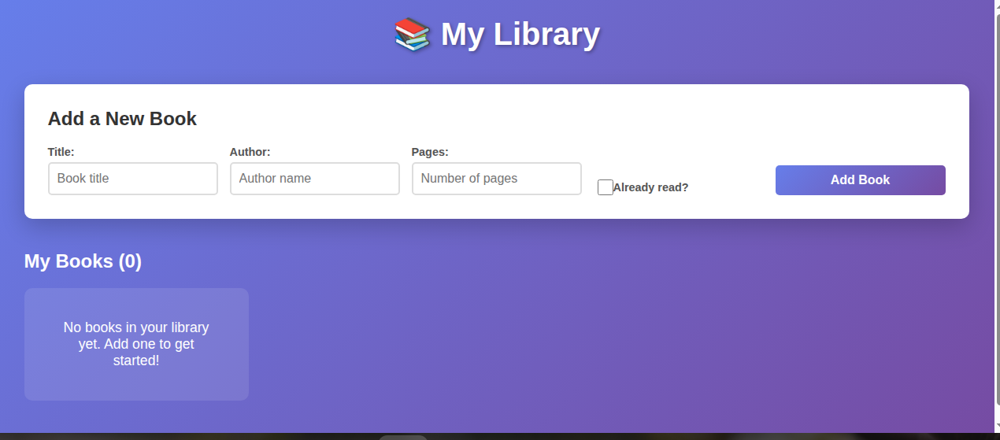

My Work





Hi! I'm an aspiring software engineer passionate about building clean, performant, and accessible web experiences. I enjoy solving complex logic problems and turning creative designs into functional code.


